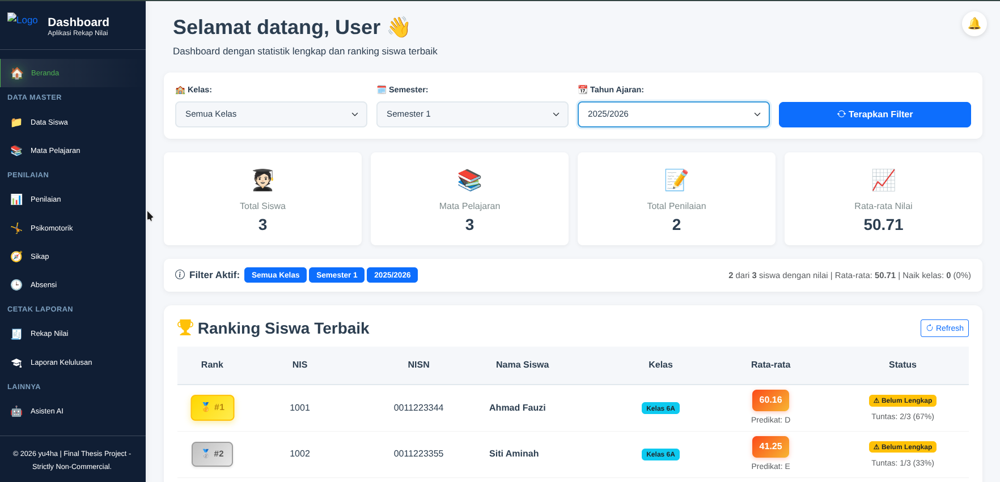
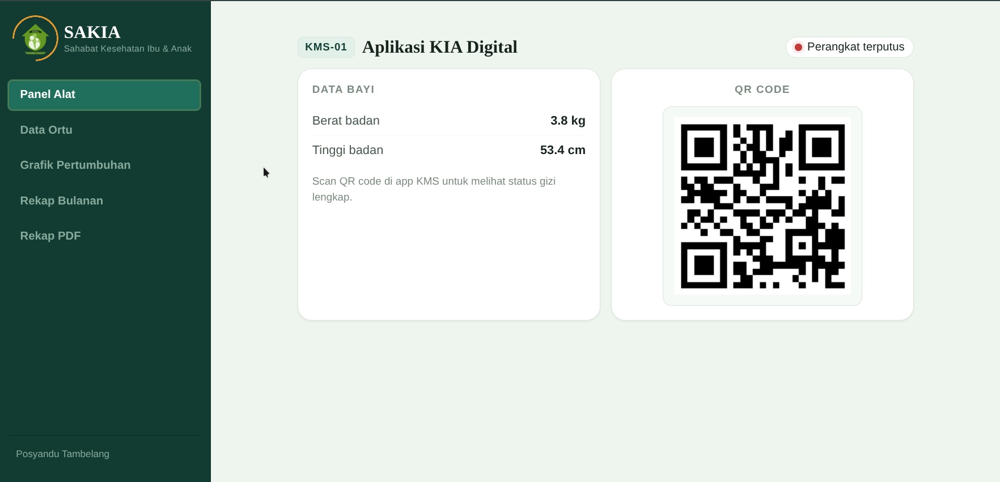
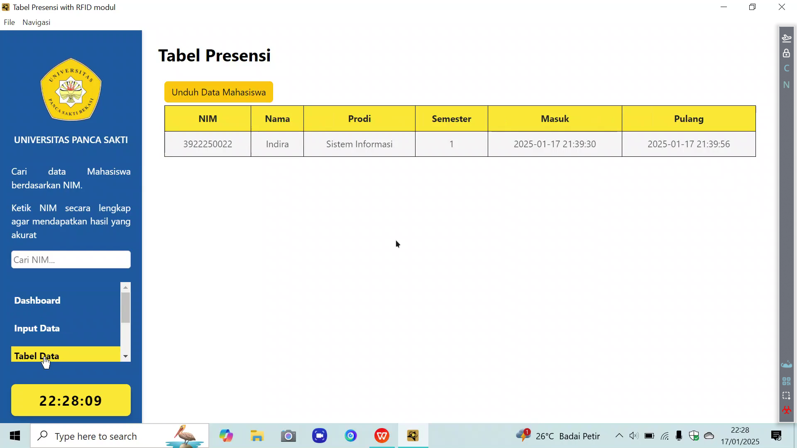

Final-year Computer Science student with hands-on experience across full-stack web and IoT development.
Delivered 3 production-ready systems spanning desktop, web, and embedded/IoT applications using JavaScript,
TypeScript, and Rust with PostgreSQL/SQLite as the data layer including an AI-assisted school reporting
dashboard and a real-time IoT baby-weighing system for community health posts (posyandu). Comfortable owning
a project end-to-end: hardware, backend, and UI. Also solves real-world technical problems through freelance
IT support work.
02
Education
Universitas Panca Sakti Bekasi2026–2027 (exp.)
Bachelor of Computer Science (Informatics Engineering)
Currently in 8th Semester | GPA: 3.6/4.0
SMA Negeri 1 Karang Bahagia2020
High School Diploma – Social Sciences
03
Tech Stack
JavaScript
TypeScript
Rust
HTML5
CSS3
PostgreSQL
SQLite
Git
GitHub
Linux
Windows
Full-Stack Web Dev
Desktop App Dev
IoT / Embedded
System Troubleshooting
Data Backup & Recovery
04
Personal Skills
Fast Learner
Adaptable
Problem-Solving
Effective Communication
Team Collaboration
Time Management
05
Work Log
IT Support & Troubleshooting Specialist (Freelance)December 2025
Multiple Companies
Resolved critical bootloop issues on office PCs for 2 companies
Complete data backup & recovery with zero data loss
Clean OS reinstallation & same-day turnaround
Post-installation support & user training
06
Projects
Featured builds: hardware, web, and AI, end to end

Home dashboard - student rankings & class/semester filters
📊 Student Grade & Graduation Recap Application + AI ASSISTANTNovember 2025 – December 2025
Web dashboard for teachers: manage student data, subjects, academic grades, psychomotor grades, attitude assessments, and daily attendance
Class rankings, per-subject mastery status, grade promotion, and graduation are calculated automatically
Print grade recap reports and graduation reports
Includes an AI Assistant: a chatbot that answers from the actual database data (no guessing). Teachers can use it to look up student data, per-subject grades, psychomotor & attitude scores, attendance statistics, class rankings, and full grade and graduation recaps, simply by asking in everyday language

Device Panel - real-time infant data & QR code to the KIA Digital app
👶 SAKIA | Digital KMS System (IoT Baby Scale)May 2026 – July 2026
Smart scale for posyandu: measures the weight and height of infants/toddlers and sends the data to the system in real time
Infant nutritional status is calculated automatically on the server as soon as measurement data arrives
Health worker dashboard shows the latest infant data and generates QR codes that can be scanned with parents' KIA Digital app
A dedicated mobile app lets parents view their child's growth history, including growth records and current nutritional status, with email-verification login

Attendance Table - search student records by student ID (NIM)
🏷️ RFID-Based Attendance ApplicationSeptember 2024 – October 2024
Languages: JavaScript | Database: SQLite
Desktop application that automatically records student attendance via RFID cards
Cards tapped on the reader are instantly logged as check-in/check-out times with no manual input
Attendance data is stored neatly and searchable by student ID (NIM)
Student recap data can be downloaded directly from the application